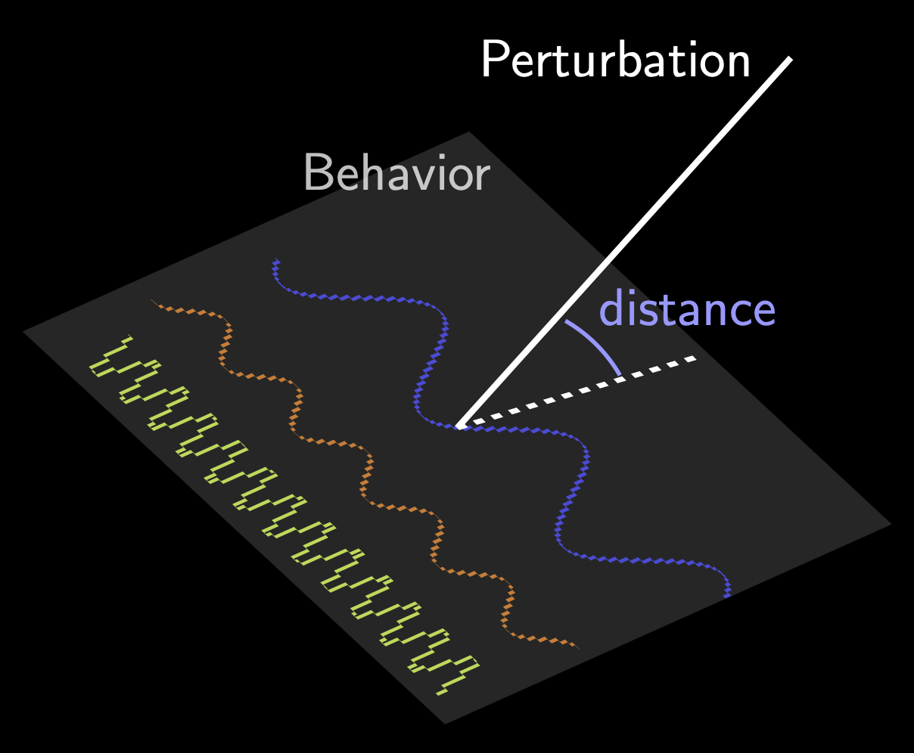
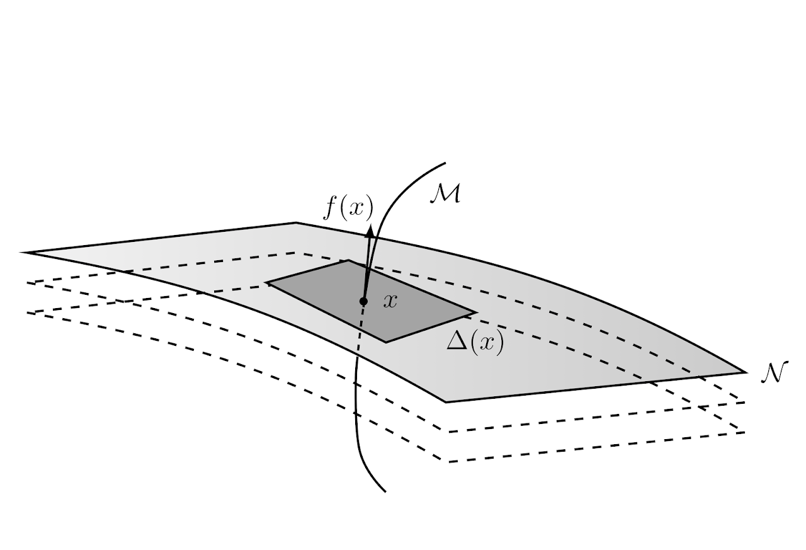

Research
Data-driven control
|  | Learning, adapting, and inferring decisions directly from data is a fundamental problem in science and engineering. The advent of large data sets, improved computational resources and the ongoing AI revolution have recently triggered a renewed appreciation for data-driven approaches to the problem, where classical models are replaced by data matrices. I am currently delving into the universe of data-driven control through the lens of (differential) geometry, convex optimization, and behavioral system theory. |
Robust dominance theory
 |
Robustness is a classical concept in control engineering. A behavior is robust if it persists under the effect of exogenous perturbations or parametric uncertainty. Enforcing robust stability of a single equilibrium is nowadays a well-understood task. However, tractable tools to design robust non-equilibrium behaviors are lacking, despite non-equilibrium behaviors being pervasive in physics, biology and robotics, among others. Working on robust dominance theory, I have contributed to developing an interconnection theory geared towards systems that switch and oscillate. The theory demonstrates that behaviors away from equilibrium can be engineered using familiar frequency domain and convex optimization tools. |
Modelling and approximation of nonlinear dynamical systems
|  | With the rapid advance of computer and artificial intelligence technologies, mathematical models of dynamical systems are playing an increasingly important role for analysis and design. The need of precision frequently leads to the inclusion of a large number of variables, thus posing a serious obstacle to achieving accurate simulations. Model reduction methods alleviate this issue by constructing simplified models that capture prescribed features of the original system, while system identification methods allow to build these models directly from measured data. In a quest towards tractable solutions, I am exploring these issues with multiple collaborators using the most disparate tools, including differential geometry, dissipativity theory and monotone operator theory. |
Collaborators
A. Astolfi - Imperial College London and University of Rome “Tor Vergata”
G. Scarciotti - Imperial College London
R. Sepulchre - KU Leuven and University of Cambridge
F. Forni - University of Cambridge
T. Chaffey - University of Cambridge
Florian Dörfler - ETH Zürich
John Lygeros - ETH Zürich
Jeremy Coulson - University of Wisconsin-Madison
Henk van Waarde - University of Groningen
J. Berberich - University of Stuttgart
A. Iannelli - University of Stuttgart
F. Allgöwer - University of Stuttgart